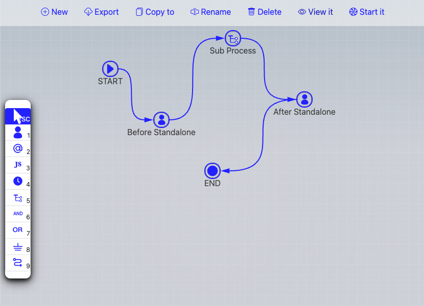

Workflow Designer
Workflow Designer provides graphical user interface to design a workflow by dragging and dropping.

Editing
Desginer support copy,paste, cut etc., as well as shortcut keys to ease your opertions..
Nodes Copy and Paste
While mouse is hovering a node , press Ctrl-C (Win) / Cmd-C (Mac) to copy it, move mouse to any position on the canvas, proess Ctrl-V (Win) / Cmd-C (Mac) to paste it.
While mouse is hovering a node, press Ctrl-X (Win) /Cmd-X (Mac) to cut it, later, you may paste the cutted node at another location wil Ctrol-V (Win) /Cmd-V (Mac)
Connext Routing Text
While mouse is hovering a connection , press Ctrl-C (Win) / Cmd-C (Mac) to copy it's routing label, move mouse to hover another connection, proess Ctrl-V (Win) / Cmd-C (Mac) to paste it.
Keyboard shortcut
- d: Mouse over a node or a connection, press d to delete it.
- cb: Mouse over a connection, press "cb" to move it's starting point
- ce: Mouse over a connection, press "ce" to move it's ending point
- gt: Mouse over a node, press "gt" to link it to another node
- ct: Mouse over a connection, press "ct" to clear its text
Copy / Cut / Paste
- Ctrl-C / Cmd-C to copy mouse overing node or connect
- Ctrl-X / Cmd-X to cut node or connect
- Ctrl-V / Cmd-V to paste nord or connect text
- To make a new copy of an exiting node
- Move mouse to source node
- press Ctrl-C on Windows or Cmd-C on Mac
- Move mouse to blank area of the canvas
- Press Ctrl-V on Windows or Cmd-V on Mac
- To make a node (destination node) the same as another (source node)
- Move mouse to source node
- press Ctrl-C on Windows or Cmd-C on Mac
- Move mouse to the destination node
- Press Ctrl-V on Windows or Cmd-V on Mac
- To make a connection (destionation) text the same as another (source connection)
- Move mouse to source connection
- press Ctrl-C on Windows or Cmd-C on Mac
- Move mouse to the destination connection
- Press Ctrl-V on Windows or Cmd-V on Mac
Select
Select one: click the node to selecte it.
Select many: click the nodes while holding Win key or Command key
Select all: Ctrl-A or Command-A.
Select with mouse: hold down Shift-key, click and move mouse to select one to many nodes. Shift-Meta to add more to selected.
Move
To move one signle node, click on it, move mouse while holding.
To move many nodes, click on them while holding Win key on Windows or Command key on Mac, while those nodes are in "selected" status, drop any of them to antoher location, other selected will move simultaneously. To move all nodes, press Ctrl-A or Command-A to select all nodes, then click on one selected node to move them all together.
On the left is the toolbox, click each tool to use it.
Pointer
Pointer is used to select a node or a connection. Press ESC anytime to select Pointer.
Under Pointer mode, you are able to:
- select a node or connect by clicking it.
- open property window of node or connect by shift-clicking it
- move a node by dragging it.
- pan canvas by clicking on blank area of canvas then dragging it.
Other tools refer to a type of workflow node.
Node Type
MetatoCome designer support various node types, they are Activity, Inform, Script, Timer, Sub Process, AND, OR, Ground, and Connect.
- Activity is a task need to be done by human
- Inform is used to send email to certain people.
- Script is used to embed Javascript in a running process, you may use to control the routing of the process, call a remote web-services running on another system.
- Timer is used to pause process for certain time, when you need to execute a task after certain time of a previous task's completion, or when you need to dispatch tasks repeatedly, Timer node is helpful for these.
- Sub Process is used to embed another workflow, or to start another standalone process.
- AND is a logic operation node to wait for compeletion of all previous tasks
- OR is a logic operation node to wait for completion of any previous task
- Groud is used to sink the execution route running to it without having to point to the END node.
- Connect is a link between two nodes.
Node Properties
Nodes of most types have properties, Shift-click on a node to open it's properties window to view or edit them. Clicking on the small arrow icon besides a selected node also bring up properties window.
Connection also has it's properties, shift-click on a connection to bring it up.
Node ID
Every node has it's unique ID which is automatically generated by default. Some time, especially when you need to program process logic with script and need to get the user's decision of a node, you may find reassigning a meaningful ID to a node much helpful.
To assign user-defined ID to a node, input new ID in properties window and click on "Set" button. You have to click on this button deliberately to make the new ID assigned.
At the end of designer menu, there is a checkbox to show/hide node IDs on the canvas.
Activity 
Press 1 anytime to select Activity
An activity is a task need to be done by human.
- Click on canvas to place an Activity node
- Shift-Click on an Activity to open it's properties
- Drag it to move to another location
Title
Activity (Task) title can include process level variables value by placing variable name in square brackets, like [var_name], [var_name] will be replace with the value of var_name.
For example: If you have a variable name "Interviewee_name", and the interviewee is "John", then the work title with a name of "Please approve offer letter of [Interviewee_name]" will be "Please approve offer letter of John", Simple.
Participant
Define task participants with Role Definition String,
See PDS page for details
Vote
If there are more than one participants, you may choose how to decide the final decision among many decisions by selcting VOTE modal.


Vote models includes:
The last one
the decision of the last vote.
The most
The decision that is made of the most people.
The least
The decision that is made of the least people.
All the same or fail to
The same decision ( one and the only one) of all people, if there are more than one decisions, the final decision will be what option specified as "failto".
More than %, or fail to
The decison which has percentage bigger than or equal to certain number. If there is no decision earn that percentage value, the final decision will be what option specified as "failto".
If any match
If any one's decision match the specified option, take it as final decision and finish vote. If no one choose that option, use the decision of the last person as final decision.
If any, or else the most
If any one's decision match the specified option, take it as final decision and finish vote. If no one choose that option, use the decision the most people chosed.
If any, or else the least
If any one's decision match the specified option, take it as final decision and finish vote. If no one choose that option, use the decision the least people chosed.
If any, then all the same , then the most
If any one's decision match the specified option, take it as final decision and finish vote. If no one choose that option, use the decision all people chosed (the one and the only one). If more than one decisions are made by all participant, use the most chosed.
If any, or fail to
If any one's decision match the specified option, take it as final decision and finish vote. else, use the "faileto" option.
Transferable
Check transferable to make this work to allow task owner to transfer the task to another user.
Keep single task in loop
When you design a workflow running some loop, for example, we have 7 actions named A,B,C,D,E,F,G respectively, and the routing relationship among them are: A->B->(C,D->E->B), means: A goto B, B goto C and D, D goto E, E goto B. So, the workflow process may run like A->B->C and D, then, while C is running, user pick up D task, the process runs continually to D->E->B->C, you see, there are another C when the previous C is still running. If you check the checkbox of Keep single task in loop, the running previous C will be kept, no new C will be disptachted. IF you uncheck the checkbox, while the running previous C is kept, another new C task will be dispatched.
Instruction
Give some instructions to people who take part in this task
You may include HTML tags/Handlebars tempalate or varName in brackets in instruction test.
Supported HTML Tags
Only following HTML tags are supported:
"b", "i", "em", "strong", "a", "blockquote", "li", "ol", "ul", "br", "code", "span", "sub", "sup", "table", "thead", "th", "tbody", "tr", "td", "div", "p", "h1", "h2", "h3", "h4"
Handlebars
Handlebars format is used to include process variables. If a previous node has a variable named "days", then, {{days.value}} can be included in instruction to embed it's value in instruction.
Var in square brackets
[var_name] will be replaced with var value.
You may also have {{days.title}} {{days.type}} etc. included if required.
Variables
define variable name, type etc.
Name:
Variable name should be a valid javascript varialbe name, that means, a variable name should start with an alphabetic, or underscore, followed by one to many alphabetic or underscore or numbers. invalid name will make your workflow fails to run.
Type:
Variable name with specific prefix also indicates variable types, determing how Metatocome SaaS show it to end-users.
Prefix
- "email_" : an email type input.
- "password_" : an password type input.
- "url_" : an url type input.
- "range_" : an range type input.
- "number_" : an number type input.
- "dt_" : an datetime type input.
- "datetime_" : an datetime type input.
- "date_" : an date type input.
- "time_" : an time type input.
- "color_" : an color type input.
- "search_" : an search type input.
- "select_" : a select type input.
- "sl_" : a select type input.
- "sel_" : a select type input.
- "file_" : an file type input.
- "radio_" : a radio type input.
- "textarea_" : a textarea type input.
- "ta_" : a textarea type input.
- "checkbox_": a checkbox type input.
- "cb_": a checkbox type input.
- "ou_": an Organization Unit Selector
- "usr_": an user ID type input
- "user_": an user ID type input
- "tbl_": an table type input.
- any other name : a normal input.
OU selector
A variable starts with "ou_" will provide user a selection box of the current orgchart. The orgchart is configurable by people who have the correspoinding access right, normally, the MTC admin of your organizaiton.
An OU selector variable named as "ou_varname", it can have opitons like "top_ou_id;[yes|no]", the string before ';' is the ouid of the first organizaitonal unit, the string after ';' is used to indicate whether the selection list should include the top item or not.
User selector
A variable starts with "usr_" or "user_" provides user with a input box for input and validate user id, MTC keep validating while you are inputting, and give you feedback of the result.
File uploader
A variable starts with "file_" will show the user a file drop area, use can drag a file and drop it onto the drop area to upload a local file to MTC. Later, other users could view it, or download it.
Internal Variables
Following variables you may use directly without being explicitly defined.
Process level variables:
- starter: the uid of the process starter,
- starterCN: the Name of the process starter.
- ou_SOU: the OU code of the process starter,
- ou_user_XYZ: the OU code of a user_XYZ variable
System variables:
- $$isoWeek: No. of week in year (number)
- $$isoWeeksInISOWeekYear: How many weeks in this year
- $$isoWeekYear: Year (based on full week)
- $$isoWeekDesc: Description of isoWeek such as W1, W13...
- $$isoWeekDescFull: Full description, like W1/52-2022
- $$date: Full description, like W1/52-2022
These internal varaibles are aslo available for:
- Workflow Context variables display,
- Handlebars in comments input, for example: "{{starterCN.value}}"
- Activity title, for example: "Activity started by [starterCN]"
- Template names
Selection Option
For a variable named like "select_", "sel_", "sl_", or "ou_",
- options should be delimited by semicolon (;), for example "option1;option2;option3";
- For "ou_" variable, the first option will be used as the top OU id, the second is "yes" or "not", whether to include the top itself.
- options can also get from a pre-defined list.
- A list is defined in a list group.
- A list has it's own key in a list group.
- "R:list_group_name" to get default items from a list group.
- "R:list_group_name:key" to get items from a list group by key.
- list can be cascaded To make cascaded list. you may:
- use T:cascade_list_name, for example, you may have province list "select_A" defined as "R:province_list;T:select_B", then, you may define select_B as "R:city_list", then, once use pick a province from select_A, select_B will get the selected value from select_A, and use it as list key to refresh options for select_B, say, get all cities of the selected city.
Table
表格栏位支持使用表格设计器来创建，详见表格设计器
A table allow users to input values with a table row by row, column by column. Table variable name starts with tbl_
Table columns are defined with a string delimited by |,
- individual column can have prefix to define its type:
- "date_" (for date input),
- "dt_" (for date time input).
- "sel_" (for selection)
- Options for this selection are given as (OPT1:OPT2:OPT3)
- column's title can be defined with [title=TITLE], or the variable name without prefix. for example, variable dt_THIS with have a title THIS automatically.
- default value can be defined with [default=DEFAULT_VALUE],
- if average value of the column is required, mark it with [avg]
- if sum value of the column is required, mark it with [sum]
- get how many days between two date type column, define it with =datediff function.
- get how many days lasting between two datetime, define it with =lastingdays function.
Example:
date\_开始时间[title=开始日期]|date\_结束时间|从哪里[default=机场]|到哪里[default=公司]|sel\_出行方式(飞机:高铁:长途汽车:出租车)[default=高铁]|=datediff(date\_开始时间,date\_结束时间)+1[title=出差天数(天)][default=0][avg]|dt\_开始时点|dt\_结束时点|=lastingdays(dt\_开始时点,dt\_结束时点,0.5)[title=请假天数][default=0][sum]|number\_报销金额[sum][avg]
The table above has following columns:
- 开始时间：
- 类型：日期
- Title: 开始日期
- 结束时间
- 类型：日期
- Title: 结束时间
- 从哪里
- 缺省值：机场
- 到哪里
- 缺省值：公司
- 出行方式
- 类型：选择列表
- 可选项：飞机，高铁，长途汽车，出租车
- 缺省值：高铁
- 出差天数（天）
- 类型：公式
- 值：开始日期，与结束日期的天数差别+1，如为同一天，则值为 1.
- 缺省值：0
- 计算平均值
- 开始时点
- 类型：datetime
- 结束时点
- 类型：datetime
- 请假天数
- 类型：公式
- 值：开始时点，与结束时点的差别，规整到 0.5 天
- 缺省值：0
- 计算总和
- 报销金额
- 类型：数字
- 求总
- 求平均
Value
the default value of this input.
- for normal input, the default value will be set in the input box.
- for select/checkbox/radio, the default value will be selected.
Formula
You may use formula for a variable which we have a value the same as the the result of its formula.
Formula is defined in the variable's value field, starts with an "=".
Formula is Javascript expression. try simple expression is strongly recommanded.
Examples:
=first_name + " " + last_name
If first_name varialbe has a value of "John", last_name is "Smith", then the result should be "John Smith".
=first_name.substring(1)
If first_name is "John", the result will be "ohn";
Label
The label of this vairable.
Placeholder
the placeholder for input or textarea
Break Row
add a new line after this variable
ID
give it an optional ID
Required
this variable's value must be provided.
Visible
use PDS to define whom this var should be visiable to
Note: Sometime, some sensitive data might should be kept secret from some participants even they have been involved in the process. For instance, in a interview process, the offered salary may not be able to seen by interviewer, only HR and manager could see it, thus, we may use PDS to make this happend.
When
use "when expression" to control when a variable is availabe for inputting. When expression is a logical expression to compare values of a RV(reference variable) and a GV(given value), it's grammer is:
RV[=|==|===|>|>=|<|<=|!=]GV
let's say we have:
- A checkbox named "checkbox_req". We want inputbox of "reason" to appear only when "checkbox_req" is checked. then we could define "when expression" for "reason" as:
checkbox_req=true
- A kvar named "number_amount", and we want another kvar named "upper_price" to appear only when "number_amount" has a value bigger than 100, then we could define "when expression" for "upper_price" as:
number_amount>100
GV is automatically converted to the type of RV, at this momnent, only string, number, boolean is supported. it's unnecessary to quote with '"' if it's a string unless it's an empty value.
for example, to compare a value is equal to string "string", we simple define
kvar=string
if we need to check whether another kvar has value instead of being blank (user does not key in anything in it's input box), we should use
kvar!=''
Note: On client side, "when expression" is only triggered after the focus leave the correspoinding input of RV.
Activty Script
Start from v5.0, MTC support add script on an Activity node. that means, this script will run after the activity is done.
The scenarios in which you may need to have activity level script been set include:
- You may need to change user's choice in frontend
- You are going to set variable an activity is done without having to place a Script node after it.
- Any other needs you have to fullfill with script code without having to place a Script node after an Activity node.
You don't have to return any value in an Activity's script codes, or else the retruned value will be used as this Activity's result, replacing any decision user may done in frontend, unless it's 'DEFAULT';
Inform 
- Press 2 at anytime to use Inform An Inform node is used to send message to people.
Operations
- Click on canvas to place an Inform node
- Shift-Click on an Inform to open it's properties
- Drag it to move to another location
Recipiants:
- Who will receive emails, define use PDS
Subject and Content:
- may use simple html or Handlebars to embed process variables
Script 
- Press 3 at anytime to use Script
Operations
- Click on canvas to place an Script node
- Shift-Click on an Script to open it's properties
- Drag it to move to another location
Sync Mode
Run script in sync mode
Async Mode
Run script in async mode, external program callback to MetatoCome later to make it continue.
Callback Point
in async mode, you need to let the CBPid (Callback Point ID) for later calling back. you may post this CBPid to your server like this:
MtcSendCallbackPointId=function(url, extraPayload);
For example:
MtcSendCallbackPointId("http://demo.mycompany.com/remembercbpid", {"foo":"bar"});
that will call your own API endpoint at "http://demo.mycompany.com/remembercbpid", This API endpoint will receive payload:
{
"cbpid": "A RANDOM Callback Point ID",
"foo": "bar"
}
Your program need to record the value of "cbpid" somewhere.
The workflow process will standby from now on until someday/sometime you callback MetaoTocome.
Callback to MTC
MetatoCome's callback poit is:
http://MTC_HOST/workflow/docallback
You should callback with payload:
{
cbpid: "the cbpid",
decision: "Your decision on this point",
kvars: {"foo","bar"}
}
"cbpid" is what you saved in last step, "decision" will be used to determine where to go afterwards, while "kvars" is a JSON which content will be embeded into process context. Following steps could read data defined in "kvars".
Note, your code must login to MTC first, get session key, and invoke callback point with your sessionkey.
Note, use MTC SDK is much easier with
SDK.callback(
{
cbpid: "the cbpid",
decision: "Your decision on this point",
kvars: {"foo","bar"}
}
);
Code
Embed any javascript code in this node.
Return value
ret = RET_VALUE;
Return value is used as routing option to decide where to go after this script node.
Notice: you may return multiple string as "node decisions" within an array. If the current script node points to three following nodes, the option of each route to them are labled as "Choice A", "Choice B" and "Choice C". If you write code like:
ret = ["Choice A", "Choice C"];
then the respected two nodes out of three will be dispatched after the execution of this script node.
Insert any variable
MtcSet(var_name, var_value, var_label)
After that, thsi variable named 'var_name' is available for following process.
** If a varialbe named "var_name" exists, it's value will be overwrite with this one.
Get value of variable.
MtcGet(var_name)
Get value of table.
// get table object first
let table = MtcGet("table_name")
// get table rows,
let rows = table.rows
// rows is an Javascript Array object, which will contain all rows value of the table
// we may then interate rows with normal Javascript operations on an array
// columns are also addressable:
let v = rows[0][0]; // the 1st column of the 1st row
v = rows[0][1]; // the 2nd column of the 1st row
v = rows[1][1]; // the 2nd column of the 2nd row
Get node decision
MtcGetDecision("THE_NODE_ID");
or
MtcDecision("THE_NODE_ID");
Set node decision
MtcSetDecision("THE_NODE_ID", DECISION);
or
MtcDecision("THE_NODE_ID", DECISION);
Set inner Team
Dynamically set a team for use later.
setRoles({
SGT: "ab@email.com",
DIRECTOR: "cd@email.com",
});
For steps after this script, any task assigned to role 'SGT' will go to a person whose email is "ab@email.com", any task assigned to role "DIRECTOR" will go to a person whose email is "cd@email.com"
Script logging
You may use normal javascript "console.log" to log debug messages in your script code. to view the log, click on 'Show log' on a process details page.
Send process context data to your own system
MtcSendContext(url)
The context data will be packed into a JSON like below and sent to the url
{
"context":{
"wfid":"...",
"tplid":"...",
"starter": {...},
"data1":{...},
"data2": {...}
}
}
Timer 
A TIMER node is used to control process running time, the process only run through this node when
- From Start: how long after the start of the whole process
- From Now: how long after the invoking of this Timer node(end of previous node).
- Fix: Specific date and time
Sub Process 
An sub-processs will be invoked to run, and the parent process will continue only when the sub-process has been completed.
sub-process's last return value will be taken as the return value from sub-process, parent process will use it to determine where to go after it.
An sub-process can also run in standalone mode, therefore, the parent process will not wait for it's completing.
Note: sub-process running in standalong mode always return "DEFAULT" immediately to it's parent, thus, there must be at least one following connection with 'DEFAULT' option to have parent process running as expected, or else, the parent process will stop at invoking this sub-process.
Here is an exmaple,
 take a look at the following process monitoring capture, you could notice the process did not continue after "Sub". the reason is that "Sub" had been set to "standalone" mode and would return "Default" always and immediately but there is no "Default" route after it.
take a look at the following process monitoring capture, you could notice the process did not continue after "Sub". the reason is that "Sub" had been set to "standalone" mode and would return "Default" always and immediately but there is no "Default" route after it.
AND 
An AND node will make process wait for completion of all it's precedent nodes.
OR 
Any precedent node is completed, an OR node will be went through, process will navigate to the following nodes of OR.
Ground 
A Ground node could have no folloing nodes, means the routing is grounded or sink.
Connect 
Connect two nodes to define a route between them. Click one node, then click another node, a curved line will be drawn between them. Shift-clicking on a connection will bring up the connection property window, simply give the connection a Case Value (a string), the Case Value will be displayed alongside of the connection line. this case value will be used to determine whether or not this route will be taken or not after it's FROM node has been completed.
A connection between two nodes has direction, it always point from one node (A) to another (B), means that the workflow should run from task A to task B.
A connection can have option, option define the route. for example, there is one connection between A to B, there is another connection between A to C, if we give A to B an option value 1, and give A to C an option value 2, then, if A return 2, the workflow will run to C, B will not be routed to. if A is an activity, the user who do that activity will be presented with option 1 and 2 to decide. if A is a script, you may use "ret=2" to return 2 from node A.
Build a connection
- Select CONNECT tool , or simple press 9, the CONNECT tool will be highlighted
- Click on the first node A,
- Click on the second node B
To connect multiple nodes in chain, click on them while holding Alt key.
Move a connection
- Hold Alt key (MAC: Opt), click on the first half of a connection then pick another node to re-select its' staring node
- Hold Alt key (MAC: Opt), click on the second half of a connection then pick another node to re-select it's ending node
or:
- Mouse over a connection, press "cb" to move it's starting point;
- Mouse over a connection, press "ce" to move it's ending point;
Cancel connecting
If you would like to cancel while connecting, double click on blank area of canvas, or press ESC
Delete a connection
- Mouse over a connection, then press Backspace or Delete
Give connection a value
- Hold Shift key, click on a connection, input is option value in the pop-up.
- While pointing at a connection, press 'ct' to clear it's value
- While pointing at a connection, press Ctrl-V to paste a value, after press Ctrl-C on an existing connection.
The connection values will be prompted as Buttons to users who are doing the work the connection linked from. User click the button to make his/her decision, the workflow engine use user's decision to determine what's the next step.
These buttons are displayed sorted by their labels' alphabetic order, Thus, "A Choice" is always displayed before "B Choice", and "1. A Choice" is always displayed before "2. A Choice".
Set processs contextual variable on connection
You may let variables be set when process run through a connecton. let's say, we have a connnection between A and B, and we have variables defined on it. when user complete A, the Engine will embed those variables to process context before dispatch task B.

设置回调接口
MTC 支持对每个流程设定回调接口，在流程的每个节点完成时，会通过调用接口将流程当前运行数据发送到回调接口

回调接口支持三种回调方式：
- 用户端 在用户完成一个工作项时，发送当前工作节点的数据到回调接口
- 服务器端 在任何一个工作流节点完成后，发送当前工作节点的数据到回调接口。 即包括用户工作项，也包括 AND，OR，Script 脚本等节点 发送整个工作流的上下文数据
- 用户端和服务端 包括前两项， 即从用户端发起，也从服务端发起
回调接口必须使用 https 访问协议
Table Designer
表格设计器用于方便的设置一个表格录入参数。
表格设计器与表格栏位定义字符串双向保持同步，如下图所示

表格栏区从左到右依次显示每个栏位的名称，点击一个栏位后，在栏位名称下会显示栏位排序操作按钮， 在下方会显示栏位内容定义区，如下图所示

点击四个栏位排序按钮，可分别将栏位移动到最前、前一个、后一个、最后一个
如选择 IsSelect，则表示该栏位可下拉选择，即可在 options 输入框中输入多个可选项，输入时用空格，分号来分割
一个栏位可以用于计算平均值和总值，在输入时，在表格的最后一行下方显示
栏位可以定义为 Formula 公式，可以对表格内各栏位根据其名称进行结果计算，按照标准 Javascript 语句计算即可。

另外，Formula 支持两个特别函数 datediff 和 lastingdays:
datediff 用于计算两个日期之间的差别，如果两个日期为同一天 如： =datediff(date开始时间,date结束时间)+1
lastingdays 用于计算两个时间点（大特 time）的持续时间，第三个参数为精度控制 如 =lastingdays(dt开始时点,dt结束时点,0.5) 返回至少半天，如 0.5， 1， 1.5， 2， 2.5 等
缺省为 1， 至少返回整天